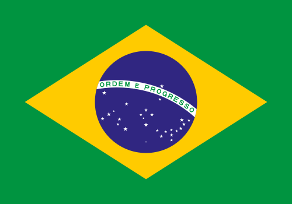
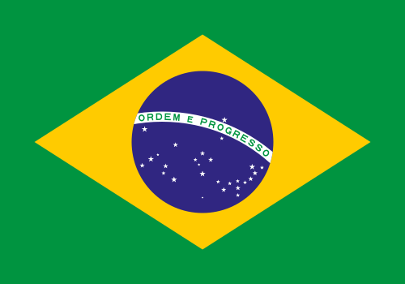


 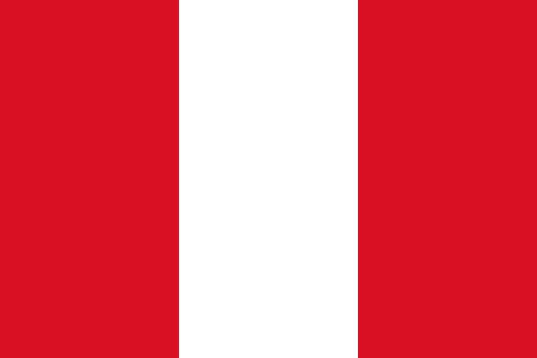
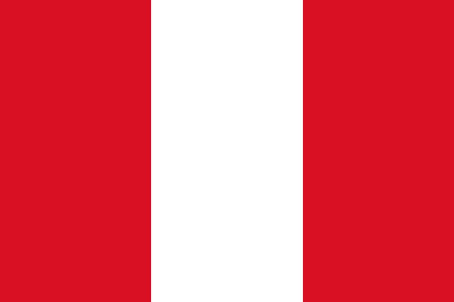

 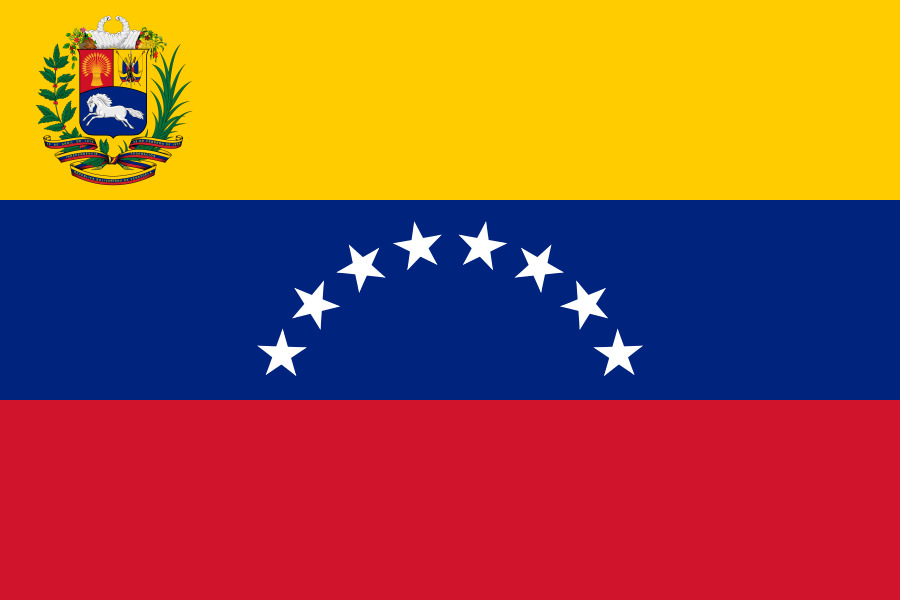
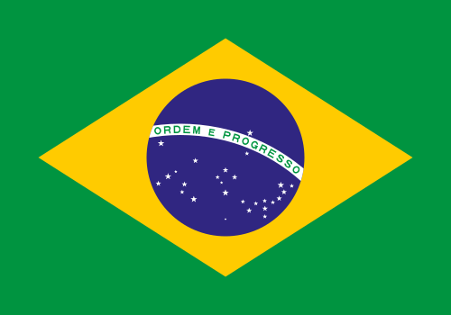
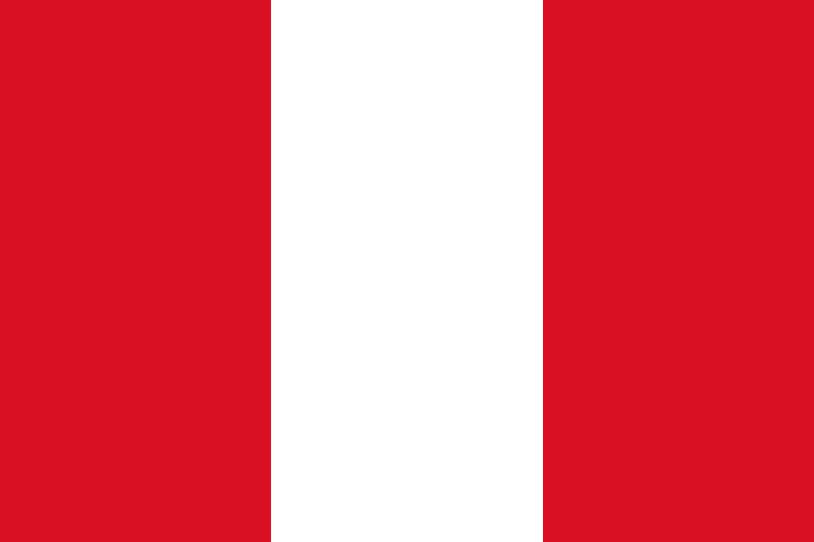
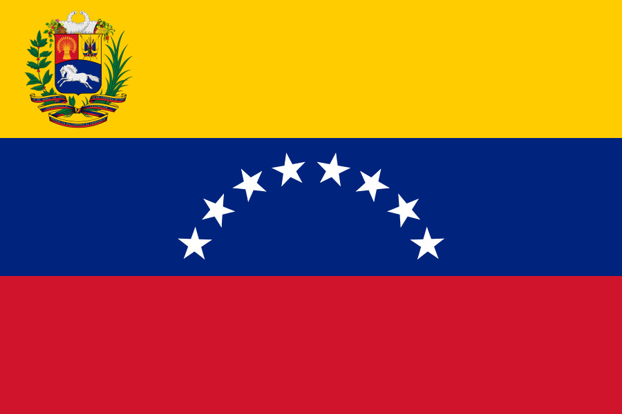
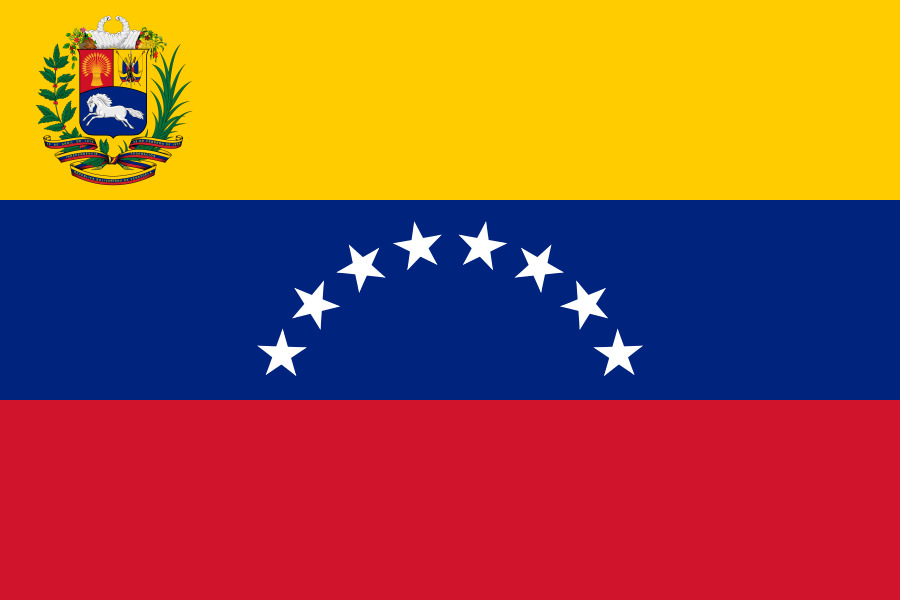
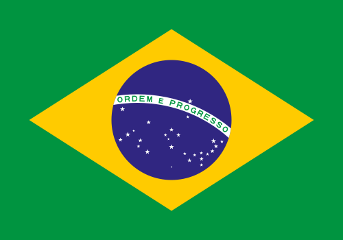
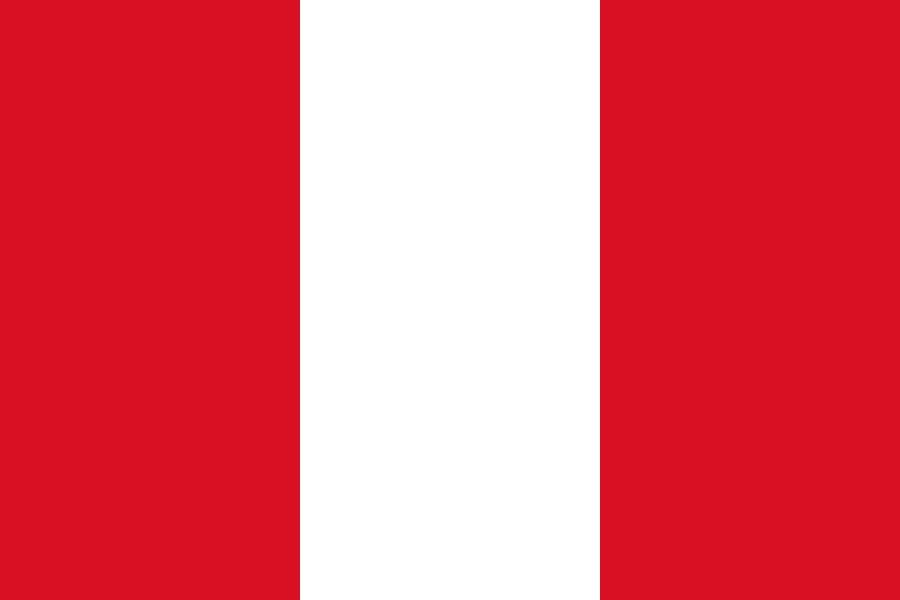
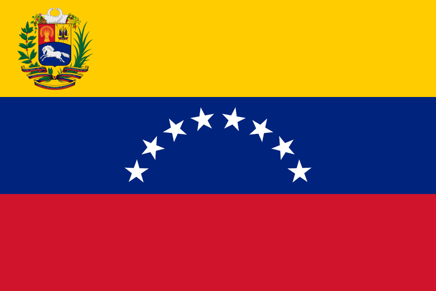
A América do Sul é um subcontinente de ~17,8 milhões km² na porção meridional das Américas, banhado pelos oceanos Atlântico e Pacífico. Com 12 países soberanos
(destaque para Brasil e Argentina) e a Guiana Francesa, abriga a Cordilheira dos Andes e a Floresta Amazônica. A região é marcada por grande biodiversidade, clima
tropical/temperado e uma população diversificada resultante da miscigenação entre povos nativos, europeus e africanos.
Países: Argentina, Bolívia, Brasil, Chile, Colômbia, Equador, Guiana, Paraguai, Peru, Suriname, Uruguai e Venezuela.
Geografia: Presença dos Andes (oeste), Planície Amazônica (norte) e Planalto Brasileiro. Banhada pelos oceanos Pacífico e Atlântico.
Economia: Fortemente baseada na exportação de commodities agrícolas (soja, carne) e minerais (petróleo, cobre, minério de ferro).
Clima: Predomínio do tropical, mas com áreas de deserto (Atacama) e clima temperado ao sul.
Cultura: Forte influência espanhola e portuguesa (idiomas dominantes), além de miscigenação indígena e africana.
População: Aproximadamente 434 milhões de habitantes.
Maior País: Brasil (cobre quase metade da área e população).
Curiosidade: Abriga a maior floresta tropical do mundo (Amazônia) e a mais longa cadeia de montanhas (Andes)./p>

| 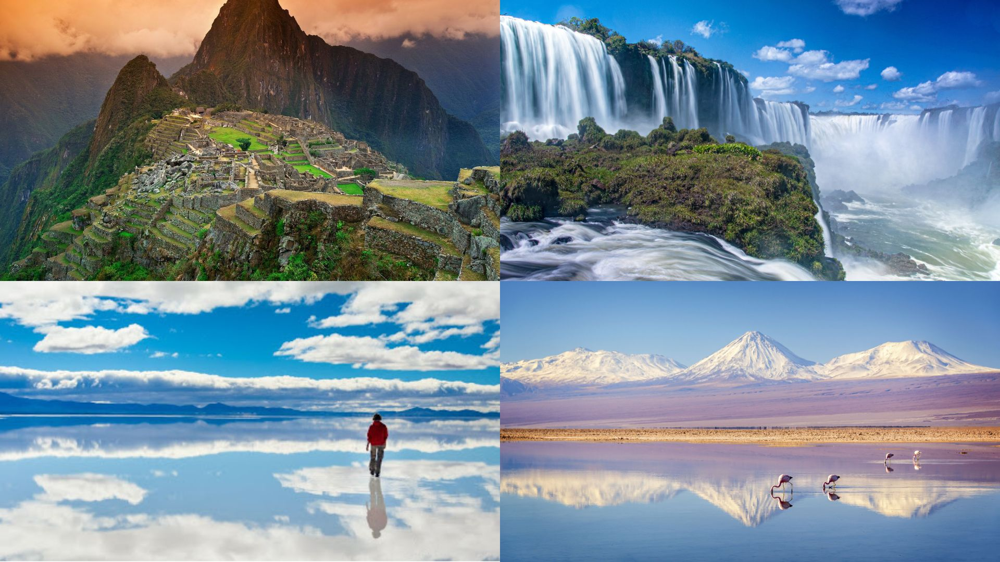 |
A América do Sul abriga maravilhas naturais e históricas |